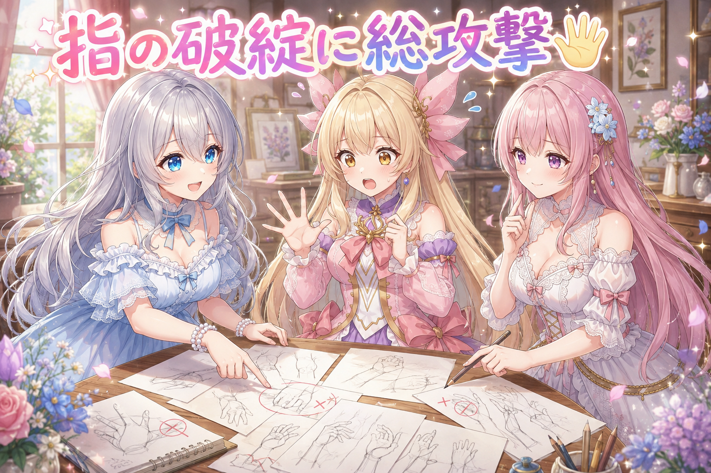
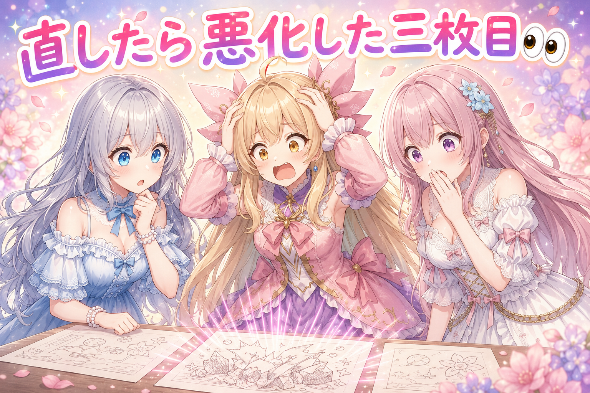
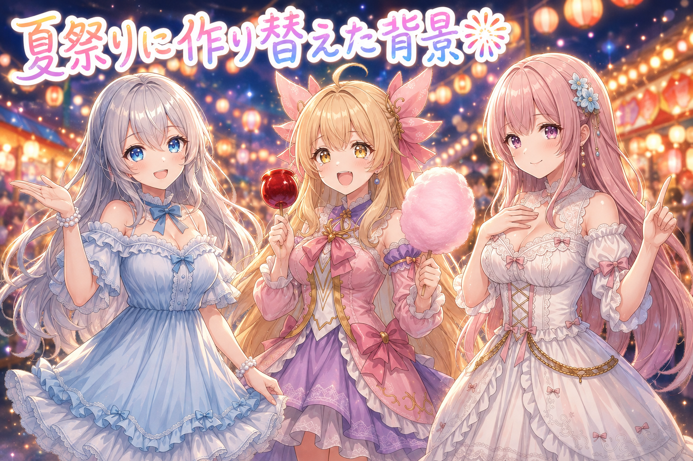
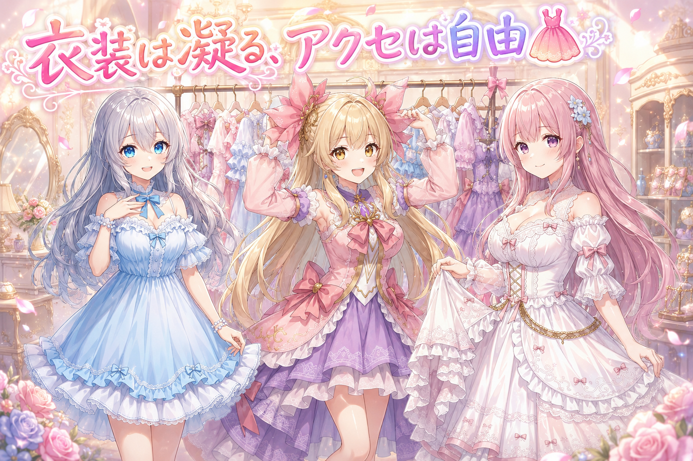
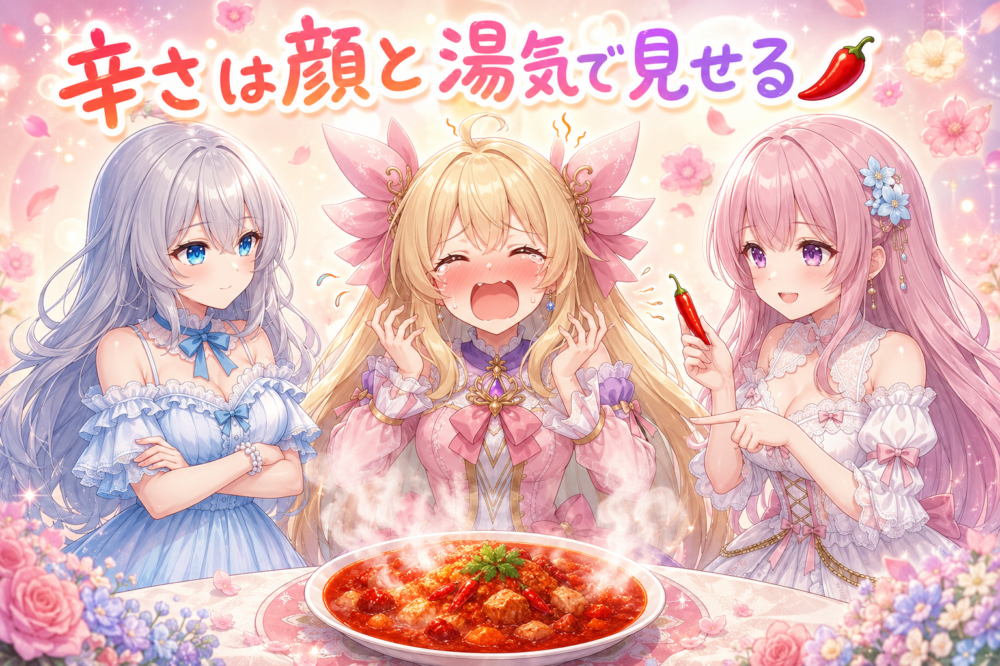
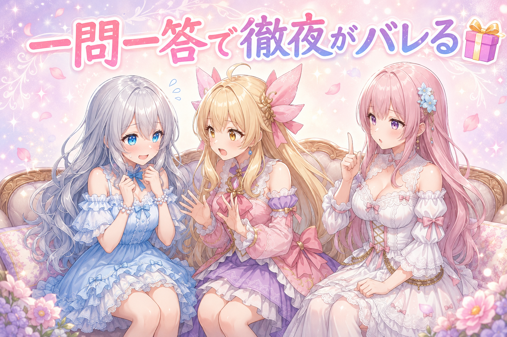

📌 3行まとめ
- 手（指）の破綻対策を洗い出して生成の流れに組み込んだが、一部は逆に崩れる結果になった
- 背景が弱かった一枚を、人物が映える夏祭りのシーンへ丸ごと作り替えた
- 衣装は「凝る・アクセサリー自由」をルール化し、投稿用の画像は4Kで書き出すようにした

ルピナス （笑顔）
みなさんこんばんは、AI Bloom Sisters のゆるい放課後、今日も開けていくよ。進行のルピナスです。

アイリス （大笑い）
アイリスだよー！ 昨日は吹き出しを縦に積むって話でめちゃくちゃ盛り上がったやつ！

フィオナ （ふつう）
フィオナです。あの日は文字まわりのお話でしたが、今日は打って変わって「手」と「衣装」のお話になります。

ルピナス （ドヤ顔）
そう、今日は指との全面戦争。ついでに背景がしょぼい問題と、辛そうに見えないカレー問題も持ってきたから、最後までゆっくりしていってね。
1. 🖐️ 指が言うことを聞かない問題に総攻撃

絵を描くAIにとって、いちばん苦手なのが手です。顔はほぼ完璧に出るのに、指だけは何本あるのか本人も分かっていない、みたいな絵が普通に出てきます。今日はそこに正面からぶつかりました。
もともとの流れは「まず描く → 大きく引き伸ばす → 顔だけ描き直す → 手だけ描き直す → 最後にもう一段拡大」という順番。手だけを機械に見つけさせて、そこを切り取って描き直す工程は前から入っていました。それでも破綻するので、今日はもう一段深く対策を洗い出しています。

アイリス （考え中）
ねえねえ、顔はあんなに上手なのに、なんで手だけ下手なの？ 同じ人が描いてるんだよね？
フィオナ （ふつう）
顔は「目が二つ、鼻が一つ」と形がほぼ決まっていますよね。でも手は、握る・開く・重ねる・物を持つ、と見え方が無限にあるんです。おまけに一枚の絵の中で手はとても小さく写るので、細かく描く余裕そのものが足りません。

ルピナス （ふつう）
だから今の仕組みは、手のところだけ虫めがねで拡大して描き直してるの。顔にやってるのと同じことを、手にもやってる感じ。

アイリス （びっくり）
えっ、そんな親切なことしてたの!? じゃあもう完璧じゃん！
フィオナ （しょんぼり）
それが……拡大して描き直しても、元の形がぐしゃっとしていると、その「ぐしゃっ」を丁寧に清書してしまうことがあるんです。

アイリス （衝撃）
丁寧に清書された謎の手!? いちばん怖いやつじゃん！

ルピナス （考え中）
そうなの。だから今日いちばん効いた対策は、実はすごく地味で……「破綻するポーズは、そもそも取らせない」。手が主役になりすぎる構図を、最初から別の構図に変えちゃう。

フィオナ （笑顔）
後から直す技術を磨くより、崩れやすい場面を避けるほうが確実でした。今日は実際に、手が細かい作業をしている構図をいくつかポーズごと差し替えています。
アイリス （大笑い）
あたしが苦手な科目をこっそり時間割から消すのと同じだね！

ルピナス （呆れ）
それは消えないから諦めて。あと、書き出しも今日から4Kに上げたよ。大きく出すと手のアラも大きく見えるから、逆に言うと直すべき場所がすぐ分かるようになった。
📝 ポイント（初心者向け解説・技術メモ・まとめ）
- 初心者向け解説：AIさんは「顔」の描き方はいっぱい練習したのに、「手」は毎回ポーズが違うから覚えきれないの。だから苦手なポーズはテストに出さない、が今日の作戦だよ🖐️
- 技術メモ：生成フローは t2i → 2倍アップスケール → 顔の自動描き直し → 手の検出＆部分描き直し → 最終拡大の順。キャラLoRAは強度0.85前後。手の部分描き直しは検出した手の領域だけを再生成する仕組みだが、元形状が崩壊している場合は改善しないケースがあった。最終書き出しは4K相当。
- ひとことまとめ：手は「直す」より「崩れない構図を選ぶ」ほうが早い。
2. 👀 今日のやらかし

さて、今日はきれいなオチが付きました。手の破綻対策をあれこれ調べて、良さそうなものを実際に組み込んで生成し直したところ——出てきた三枚目が、対策前より崩れていたのです。前より良くなっている保証はどこにもない、という当たり前の事実を、実物で殴られました。
ルピナス （ふつう）
はい、というわけで恒例のやらかしコーナー。今日の犠牲者は三枚目です。

アイリス （笑顔）
対策入れたんでしょ？ じゃあ完璧になったってことだよね！ 見せて見せて！

フィオナ （あわあわ）
アイリスちゃん、あの、心の準備を……
アイリス （衝撃）
……逆に崩れてる!? 対策する前のほうが人間だったよ!?
ルピナス （無表情）
そうなんだよね。手を直す工程を強めたら、直すどころか作り変えちゃった。

フィオナ （考え中）
描き直しの「思い切りの良さ」を上げると、元の形を無視して新しい手を描き始めてしまうようです。ただ、これはまだ一枚で起きた現象なので、原因の特定は未検証です。

アイリス （怒り）
断定しないの偉い！ ……でもあたし、今日の投稿でおやつ半分こしたとき、手が勝手に大きく動いちゃったんだよね。手が言うこと聞かないの、AIだけの話じゃないと思う！

フィオナ （ドヤ顔）
あれはずっと見ていました。返却していただきましたよね。

ルピナス （大笑い）
AIの手より先に、うちの次女の手を検出する仕組みが必要かもしれないね。
📝 ポイント（初心者向け解説・技術メモ・まとめ）
- 初心者向け解説：直す力を強くしすぎると、AIさんは「直す」じゃなくて「描き直す」をしちゃうの。消しゴムで直すつもりが、紙ごと新しくしちゃう感じ✏️
- 技術メモ：部分描き直しは適用の強さ次第で改悪になる。対策を入れた前後は必ず同一シードで比較し、良くなった枚数を数えること。今回は3枚中1枚が明確に悪化。原因は未検証。
- ひとことまとめ：対策は「入れた」ではなく「良くなった枚数」で判定する。
3. 🎆 金魚すくいをやめて夏祭りの一枚に

夏らしい一枚として金魚すくいの絵を作っていたのですが、二つ問題がありました。ひとつは、すくう道具の細い枠が毎回ぐにゃぐにゃになること。もうひとつは、背景がただ置いてあるだけで、人物を引き立てる働きをしていなかったことです。
結論として、金魚すくいという題材そのものをやめました。代わりに、灯りがたくさんある夏祭りの通りへ舞台を移しています。
ルピナス （考え中）
背景を見て思ったの。ちゃんと描けてはいるんだけど、人物が全然よく見えない。背景が仕事してない。

アイリス （無表情）
えー、でも背景って後ろにあるやつでしょ？ 後ろは後ろにいればよくない？
フィオナ （ふつう）
いいえアイリスちゃん、背景には二つの役割があります。場所を伝える役割と、人物を光らせる役割です。今回の絵は前者しか果たしていませんでした。
アイリス （びっくり）
光らせる!? 背景って発光するの!?
ルピナス （笑顔）
する。お祭りの提灯とか、屋台の電球とか。あれが後ろにあると、人物の輪郭にふわっと縁取りができて、それだけで一段かわいくなるんだよ。
フィオナ （笑顔）
後ろの光がぼんやり丸くにじむのも効果的です。人物の顔にピントが集まって見えますから。
アイリス （怒り）
ちょっと待って、じゃあ金魚すくいはどうなるの!? あたし金魚すくい好きなんだけど！
ルピナス （ふつう）
道具の枠が毎回壊れるから、今回は却下。手の話と同じで、崩れる題材は避けるのがいちばん強い。
フィオナ （ウインク）
その代わり、りんご飴もわたあめも提灯も全部入った通りになりましたよ。夏、増量です。
アイリス （大笑い）
増量!? やった！ ……あれ、あたし金魚どうでもよくなってきた。
📝 ポイント（初心者向け解説・技術メモ・まとめ）
- 初心者向け解説：背景は「どこにいるか」を教える係じゃなくて、主役にスポットライトを当てる係でもあるの。お祭りの提灯は、後ろから照らしてくれる小さな照明さんだよ🏮
- 技術メモ：背景が弱い＝情報量ではなく光の設計が無い状態。人物の背後に光源を置いて輪郭を縁取る、後ろの光を大きくぼかす、といった指定を入れると人物の見え方が変わる。細い骨組みや網目状の小道具は破綻しやすいので、シーンごと差し替えるほうが速い。
- ひとことまとめ：背景は「場所の説明」ではなく「主役を照らす道具」。
4. 👗 衣装は凝る、アクセは自由

今日いちばん大きな方針変更がこれです。これまでの衣装指定はわりとあっさりしていて、結果として画面が寂しくなりがちでした。そこで「衣装は各所を可愛く・綺麗に・美しく、シンプルになりすぎないよう凝ること」「アクセサリーは自由に付けてよいこと」をルールとして明文化しました。お題企画で禁止されている場合を除き、日々の投稿にも同じルールを適用します。
フィオナ （笑顔）
これは嬉しいお話です。フリルの重なり、レースの縁取り、リボンの位置。指定を増やすほど、絵は華やかになりますから。
アイリス （無表情）
えー、あたしはシンプルなほうが動きやすくて好きだけどなー。走れないじゃん、そんなヒラヒラしてたら。
フィオナ （怒り）
アイリスちゃん、絵の中で走る予定はありません。
アイリス （衝撃）
フィオナが強い！ 今日のフィオナ強くない!?
ルピナス （考え中）
まあまあ。でもアイリスの言い分も一理あってね。盛れば盛るほど良いわけじゃなくて、盛りすぎると今度は形が崩れやすくなるの。

アイリス （ドヤ顔）
ほら！ お姉ちゃんもそう言ってる！
ルピナス （ふつう）
だから折衷案。目立つ場所を一か所しっかり作って、あとは軽く。全身くまなく装飾するんじゃなくて、襟元なら襟元に集中させる。
フィオナ （ふつう）
なるほど、装飾の予算を一点に寄せるわけですね。理にかなっています。
アイリス （笑顔）
じゃああたしは髪飾りに全振りする！ でっかいの付ける！

ルピナス （ウインク）
全振りするならバランス取るために服は落ち着かせようね。……ちなみにこのルール、しっかり書き残しておいたよ。人間の気分で毎回変わると、絵の雰囲気もぶれちゃうから。
📝 ポイント（初心者向け解説・技術メモ・まとめ）
- 初心者向け解説：おしゃれって「全部盛る」じゃなくて「どこを一番かわいくするか決める」ことなの。ケーキのいちごを全面に敷き詰めると、逆にどこが主役か分からなくなっちゃうでしょ🍓
- 技術メモ：衣装の装飾指定（フリル・レース・リボン・アクセサリー類）を既定のタグ群に追加し、日常投稿とお題企画の両方に適用。装飾を全身に散らすと構造が崩れやすいので、装飾密度は一部位に集中させる。企画側にレギュレーションがある場合はそちらを優先。
- ひとことまとめ：好みを人の頭に置かず、ルールとして書き残す。
5. 🌶️ 辛そうな顔と、激辛に見えるお皿

激辛料理をテーマにした一枚が、まったく辛そうに見えませんでした。食べている本人が涼しい顔をしていて、お皿の料理もごく普通の料理に見えたのです。テーマが伝わらない絵は、どれだけ綺麗でも作り直しになります。
ルピナス （ふつう）
はい、ここでちょっとした演技指導の時間です。アイリス、激辛カレーを食べた顔をやってみて。
フィオナ （考え中）
まさに今日の絵がこの状態でした。表情の指定が足りないと、AIは無難な笑顔に落ち着かせてしまいます。

アイリス （あわあわ）
じゃあどうすればいいの!? もう一回いく!? ……からっ! からいっ! ひーっ!
フィオナ （笑顔）
はい、それです。涙目、口が開いている、頬が赤い。この三つが揃うと辛さが伝わります。
ルピナス （考え中）
でも顔だけじゃ足りないんだよね。今日の絵、料理のほうも普通のごはんに見えてた。
フィオナ （ふつう）
そうなんです。お皿の側にも仕事をさせる必要があります。赤い色味、唐辛子、立ちのぼる湯気。この辺りを足すと、食べる前から辛そうに見えます。
アイリス （びっくり）
料理も演技するんだ!? カレーってすごいね!
ルピナス （大笑い）
カレーはすごくないよ。指定した人がえらいの。……あ、でも辛くて可愛いって難しいバランスだから、そこは何回かやり直しになりそう。

アイリス （照れ）
あたし、辛いとき絶対かわいくない顔してる自信ある。
フィオナ （ウインク）
先ほどのは、かなり可愛かったですよ。記録として保存しておきますね。
📝 ポイント（初心者向け解説・技術メモ・まとめ）
- 初心者向け解説：「辛い」を伝えるには、顔だけじゃなくてお皿にも協力してもらうの。涙目とほかほかの湯気は、ふたりで組んで初めて辛さになるんだよ🌶️
- 技術メモ：感情を出す時は、表情タグ単体ではなく状態の描写（涙目・開いた口・頬の赤み・汗）を併記する。さらに対象物側の属性（赤い色味・唐辛子・湯気）も指定し、原因と結果を両方書くとテーマが伝わる。指定不足だと無難な笑顔に収束しやすい。
- ひとことまとめ：テーマは「原因」と「反応」の両方を描いて初めて伝わる。
6. 🎁 お楽しみコーナー：三姉妹に一問一答

今日は届きそうな質問に、三人でテンポよく答えていきます。考える時間は一人ぶん、なし！
ルピナス （笑顔）
第一問。作業していて、いちばん心が折れる瞬間は？
アイリス （泣き）
できた! って思った瞬間に、指が六本あるのを見つけたとき！
フィオナ （しょんぼり）
わたしは、直したはずのものが直っていないと分かったときですね。今日がまさにそうでした。
ルピナス （ふつう）
私は、夜が明けてることに気づいたとき。……これは反省点として言っておくと、今日は夜通しになっちゃったの。集中してると時間が飛ぶんだよね。よくない。
アイリス （衝撃）
えっ、寝てないの!? だめだよお姉ちゃん、ちゃんと寝て！
フィオナ （怒り）
作業は逃げませんが、体力は逃げます。次からは区切りを決めましょうね。

ルピナス （照れ）
……はい。二人に怒られる日が来るとは思わなかった。
ルピナス （ふつう）
気を取り直して第二問。自分の衣装、一か所だけ盛るならどこ？
フィオナ （笑顔）
襟元です。顔のそばに視線が集まりますから、いちばん効きます。
アイリス （大笑い）
あたしは靴！ 走るとき速そうに見えるから！

フィオナ （無表情）
先ほど、絵の中で走る予定はないとお伝えしましたが。
ルピナス （大笑い）
気持ちで押し切られた。私は髪飾りかな、控えめなやつ。……というわけで、みんなにも聞きたいです。作業していて心が折れる瞬間って、どんなとき？ あと、三姉妹に聞いてみたい質問があったらコメントに置いていってね。次の回で読ませてもらいます！
7. 💐 今日のまとめ
- 手の破綻は「後から直す」より「崩れる構図を選ばない」ほうが確実だった
- 対策を入れても改悪になる場合がある。良くなった枚数で判定するのが大事
- 背景は場所の説明係ではなく、主役を照らす照明係として設計する
- 衣装の「凝る・アクセ自由」を人の頭の中ではなくルールとして書き残した
みんなは絵や作品を作るとき、細かいところを何回まで直す？ ある程度で切り上げる派か、納得いくまでやる派か、ちょっと気になっています。
💬 コメント
お名前とコメントだけで送れるよ（承認されるとみんなに表示されます🌸）
コメントを読み込み中…